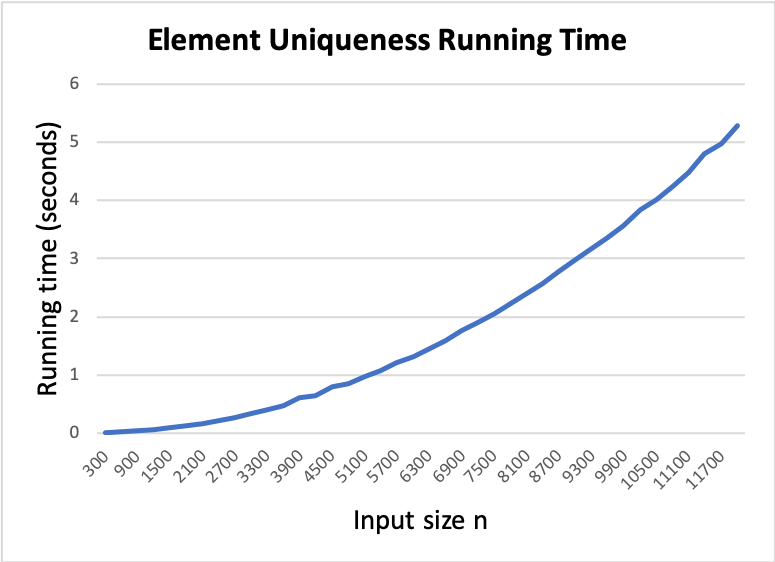

Homework 03 — Element Uniqueness
In this assignment you will verify through experimentation that the Element Uniqueness algorithm we looked at in class has a running time of Θ(n2). Please complete each of the following steps.
Step 1 – Implement the Algorithm
The first thing you must do is implement the Element Uniqueness algorithm. You can use Python 3, Java, or C++ for your implementation.
Step 2 – Time your Implementation
Add code that measures how long your implementation takes to run with a given input list. Here are some additional details:
- For this assignment you should use the elapsed time while your Element Uniqueness function runs. Do some research on how to obtain the system time. You can then get the start and end times (
tStart, andtEnd) and compute the running time, which would betStart - tEnd. - Your program should only measure the running time of the function itself and not include other parts of your program, such as creating the input lists.
Step 3 – Perform Multiple Runs
-
We are interested in how the algorithm behaves as the input size grows. So you should run the algorithm a minimum of 40 times, each time with a larger list.
Step 4 – Program Output
The output of your program will be a CSV (comma separated values) text file named results.csv. The file should have one line for each input list. That line will have two values, separated by a comma. The first value is the input size, n, which is the length of the list. The second value is the running time for that list in seconds. Here is an example CSV file that was produced when I ran my solution program: results.csv.
Step 5 – Plot Your Results
You can open your CSV file directly into MS Excel or another spreadsheet program to produce a plot of the input size n vs. the running time. A plot of my sample output from Step 4 is shown below.

What to Turn In
For this assignment you are to submit two files through Blackboard:
- A zip file containing the source code file for your program.
- An image file with your plot. This can be any common image format, such as PNG, JPEG, etc.